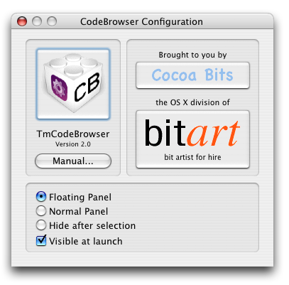

Version: 1.11
TmCodeBrowser is a TextMate plugin designed to help navigating source files. It will parse any language known to the underlying Exuberant Ctags program (enhanced by a small script to also support Objective-C). It will present classes, subroutines etc. in a TreeView. Clicking on any entry will jump to the corresponding location in the source code.
TmCodeBrowser requires OS X 10.3.9 or later and TextMate v1.1b17 REVISION 687 or later.
If the Sort checkbox at the top of the TmCodeBrowser panel is checked, all entries will be sorted within their categories. When unchecked, entries will be presented in the order they appear in the source file. The sort setting is remembered for each TextMate language setting.
You can bring up the configuration panel by clicking on the small Config button at the top of the TmCodeBrowser panel. This dialog then appears:
You can click on the TmCodeBrowser icon to get to the TmCodeBrowser homepage. Clicking on the Manual button will bring up this manual.
The panel can be set to operate in three different modes:
In this mode the TmCodeBrowser panel will always be on top of all other TextMate windows. This is handy when you like to always have the panel visible.
When this option is selected the TmCodeBrowser panel will behave like standard panels and can become obscured by other windows. To bring it to the front click on it, or use the Menu entry Window/Show CodeBrowser or it's keyboard shortcut ⌃⌘T (in case your browser does not detect this as a UTF-8 document, the previous is supposed to read Ctrl-Cmd-T).
In this mode the TmCodeBrowser panel will hide after a selection was made. In this mode it will behave much like TextMate's Go to file... panel.
If this option is selected, the TmCodeBrowser panel will automatically appear each time TextMate is launched.
TmCodeBrowser tries to be friendly to users who prefer to use the keyboard as much as possible. To make use of this set the Panel mode to your liking (probably Hide after selection). Bring the TmCodeBrowser panel up by pressing ⌃⌘T (in case your browser does not detect this as a UTF-8 document, the previous is supposed to read Ctrl-Cmd-T). Enter some characters to select the desired item, the search will behave similar to TextMate's Go to file.... use the Up and Down arrow keys to move the selection, and press the Return or Enter key to make your selection.
TmCodeBrowser uses the Exuberant Ctags program to parse all files. Exuberant Ctags can be customized and even enhanced to parse other languages by adding some lines to the ctags configuration file. To not conflict with other ctags uses, TmCodeBrowser uses the file ~/.ctags.tmcodebrowser (clicking on this link will open the file in TextMate). If that does not exist, TmCodeBrowser will use an internal file with this default content.
The sources for the Exuberant Ctags are public, and allow anyone to add support for additional languages. However it is also possible to add rudimentary language support by simply adding a few lines to the configuration file.
Here is a brief example for latex, courtesy of Jeroen van der Ham:
--langdef=latex
--langmap=latex:.tex
--regex-latex=/\\label\{*([^} \t]+)[ \t]*\}/\1/l,label/
--regex-latex=/^\\(sub)*section{([^}]*)}/\2/s,section/
The example above (courtesy of Jeroen van der Ham) shows how to add support for languages not supported by the Exuberant Ctags: The --langdef line gives the language a name, the --langmap line tells ctags which extensions files of this language have, and the --regex-latex lines define some regular expressions that ctags uses to parse language elements. See the Exuberant Ctags manual page for details.
The default content that TmCodeBrowser provides also adds very basic support for:
TmCodeBrowser is free for personal use. If however you use it frequently or if you would like to support development of quality OS X software, please consider a donation. Start by clicking on the button below. Payment is handled via PayPal, no PayPal account needed and no registration required. Or better yet, if you know of any contract work for an individual who knows the Appkit inside and out (NeXT/OPENSTEP/OS X developer since 1989) please contact me!